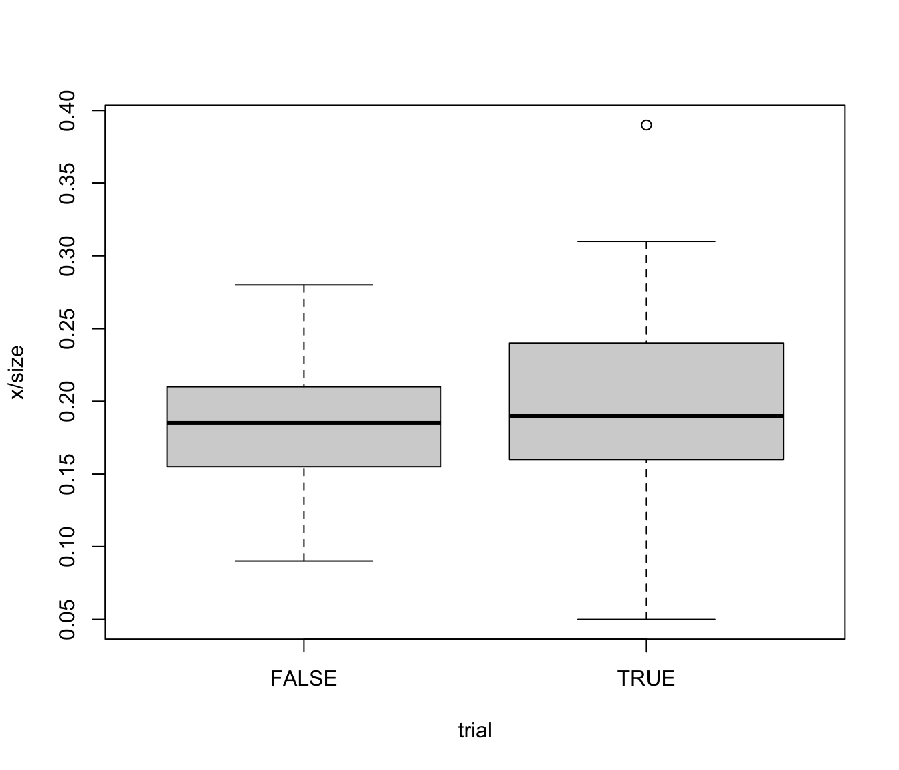

Number of nonconformities observed in 26 successive samples of 100 printed circuit boards. Sample 6 and 20 are outside the control limits. Sample 6 was examined by a new inspector and he did not recognize several type of nonconformities that could have been present. Furthermore, the unusually large number of nonconformities in sample 20 resulted from a temperature control problem in the wave soldering machine, which was subsequently repaired. The last 20 samples are further samples collected on inspection units (each formed by 100 boards).
data(circuit)
A data frame with 46 observations on the following 3 variables.
number of defectives in 100 printed circuit boards (inspection unit)
sample size
trial sample indicator (TRUE/FALSE)
Montgomery, D.C. (1991) Introduction to Statistical Quality Control, 2nd ed, New York, John Wiley & Sons, pp. 173--175
#> ── circuit$trial = FALSE ──────────────────────────────────────────────────────────── #> #> Obs Mean Std.Dev. Min Q1 Median Q3 Max #> x 20 18.3 4.714 9 15.5 18.5 21 28 #> size 20 100.0 0.000 100 100.0 100.0 100 100 #> #> ── circuit$trial = TRUE ───────────────────────────────────────────────────────────── #> #> Obs Mean Std.Dev. Min Q1 Median Q3 Max #> x 26 19.85 7.165 5 16 19 24 39 #> size 26 100.00 0.000 100 100 100 100 100boxplot(x/size ~ trial, data = circuit)circuit <- transform(circuit, sample = seq(nrow(circuit))) plot(x/size ~ sample, data = circuit, type="b")